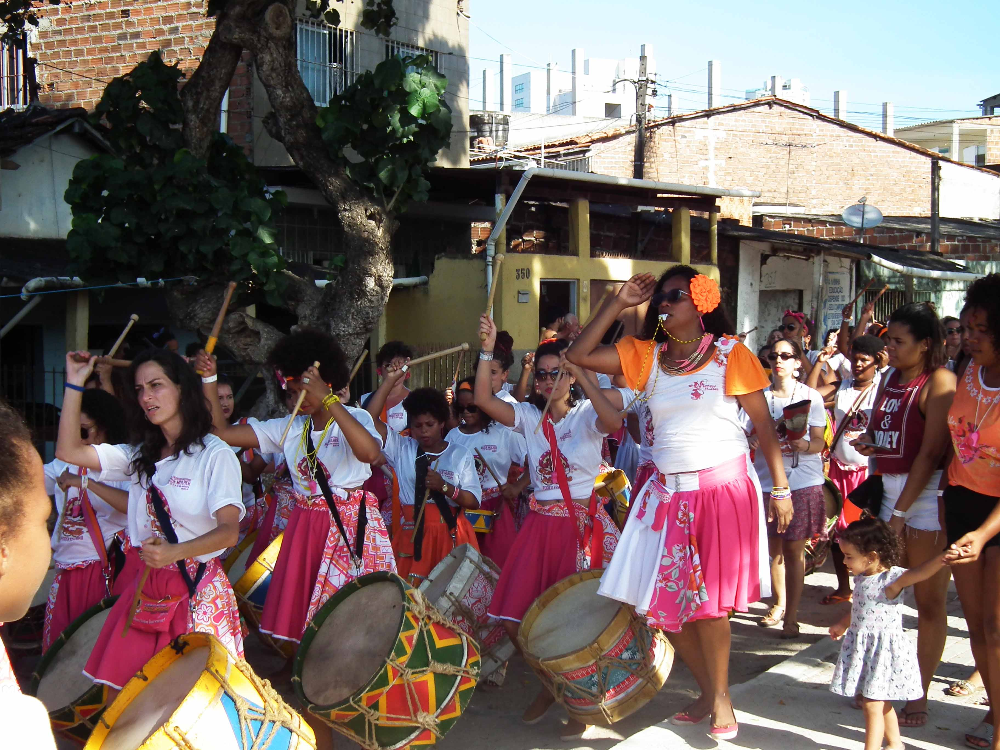
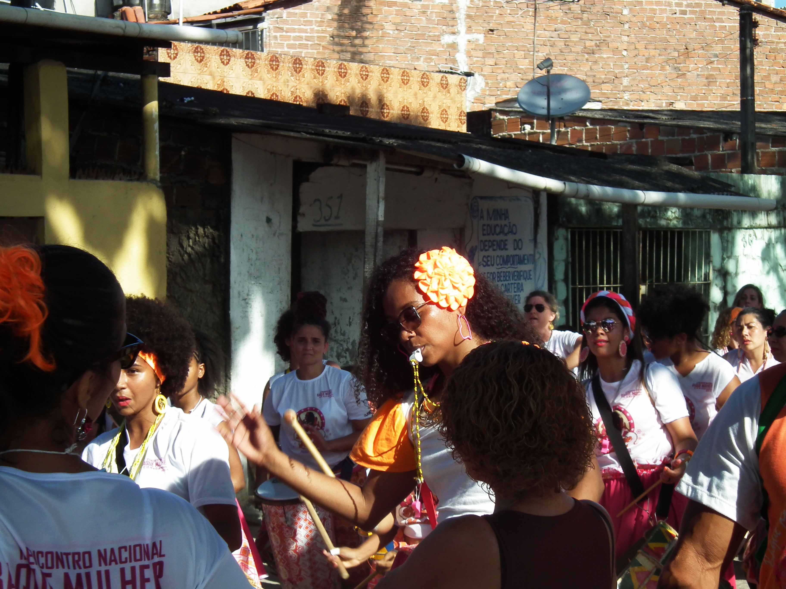

Joana D’arc Cavalcante já nasceu com nome de mulher guerreira. Assim como a francesa, a Joana D’arc pernambucana é a heroína e a mártir de seu povo, da Comunidade do Bode, no Pina, na zona sul do Recife. Há quase dez anos, Joana permanece como a única mulher mestra de maracatu do Brasil, posição que ela jamais havia pensado em conquistar devido ao machismo intrínseco à manifestação cultural.
Mas esse era o destino que os Orixás queriam para ela e disseram isso através dos búzios. O Maracatu Encanto do Pina foi fundado pela avó de Joana, Maria de Sônia, em 1980, que era mãe de santo e de criação do pai dela. Em 2008, a filha de Maria de Sônia não quis assumir o grupo e a liderança acabou passando ao pai de Joana. Mas, logo depois de ele assumir, os orixás disseram que quem tinha que tomar as rédeas era Joana. E assim foi feito. No mesmo ano, Joana passou a liderar o Maracatu Encanto do Pina, herdando a posição que era de seu pai.
O primeiro contato com a manifestação popular foi ainda na barriga da mãe. Também não tinha como ser diferente: toda a família era envolvida com o maracatu. O primeiro instrumento a aprender a tocar nem lembra mais. Hoje, Joana sabe tocar de tudo um pouco, mas diz que o seu predileto é o abê. Na nação Porto Rico, outro maracatu nascido no bairro do Pina, Joana é coordenadora da ala desse instrumento.
Mesmo tendo sido criado por uma mulher, o grupo não deixava de ser menos patriarcalista do que os demais do estado. Na frente do baque - nome dado ao ritmo instrumental do maracatu - sempre estiveram os homens. Mulher estava sempre nos bastidores, lavando, passando e costurando, afinal, historicamente, esse era o lugar delas. E essa era uma tradição que ia passando de geração para geração.
“Elas sempre estiveram lá, na posição de rainha ou ajudando o maracatu por trás. Nunca em posição de liderança, nunca como mestra de baque, porque não era permitido. Historicamente é dito que no maracatu mulher é pra rodar saia”, afirma Joana.
Hoje, o tabu do local da mulher dentro do maracatu vem sendo quebrado graças a iniciativas como as da mestra. A mulher passou a se impor e a se empoderar, ocupando todos os espaços possíveis dentro do folguedo. E, para Joana, estar na posição de maior destaque e prestígio é uma grande responsabilidade. “Eu sinto que é uma missão. Todas as mulheres se dirigem a mim como mestra. Por eu ser a primeira mestra de uma manifestação que tem mais de 200 anos de tradição, as outras mulheres me veem como um exemplo. É uma missão árdua, dura, mas vai ser através de mim que virão muitas outras. Essa é a luta, que outras mulheres assumam o lugar de protagonista, não só dentro do maracatu, como também em sua própria vida”, aponta Joana.
Dor e gratificação se misturam na fala de Joana. Mesmo estando numa posição de liderança, Joana não escapa das alfinetadas diárias e da resistência das pessoas que são contra ela liderar o grupo percussivo. “Incomoda, né? A mulher quando vai ocupar o seu papel incomoda. Ser mulher, ser negra, ser de comunidade e ainda mais sendo da religião do candomblé, incomoda dez vezes mais”, critica. Nada disso é notado quando são os homens que estão segurando o apito. Homens são respeitados, são bem vistos, afinal, é o comum.
“Isso é nítido. Até na questão do tratar você percebe. Quando é um homem todos se dirigem a ele como mestre. Comigo é apenas Joana. Fulano é mestre, ela é apenas Joana. Isso é bem comum quando tem as reuniões com os mestres das nações, quando tem a abertura do carnaval. É sempre muito gritante a opressão”, relata.
O incômodo não se atém apenas aos olhares e indiretas machistas. As violências muitas vezes deixam de ser simbólicas e passam a ser verbalizadas e bem direcionadas. “Já chegaram para dizer que o Maracatu Encanto do Pina não tinha fundamento porque era uma mulher que estava na frente regendo”, relembra.
A resposta a esses afrontes vem em forma de trabalho e engajamento, dando continuidade ao que foi a ela destinado, sem desistir. Empoderar outras mulheres e trabalhar na comunidade é o foco da mestra Joana, afinal, como lembra a própria, “a comunidade é a base do maracatu” e sem ela não existe o folguedo.
Além do machismo, Joana e todos que estão envolvidos com o maracatu também precisam lidar com o preconceito religioso destinado aos integrantes do candomblé. As nações de maracatu de baque virado são todas fundadas em terreiro, logo não há como separar a manifestação cultural da veia religiosa. “Não tem nenhuma nação de maracatu que seja fundada em uma igreja, por exemplo. Então o maracatu já nasce com sua identidade religiosa formada, ele já nasce dentro do candomblé. E por conta disso hoje também lutamos para que o maracatu não seja desvinculado da religião por essa globalização que o transformou em um ‘modismo’. O maracatu atualmente está no mundo inteiro, mas levaram para fora apenas o que queriam”, critica Joana.
O amor ao maracatu e a todas as causas sociais que defende fez com que Joana largasse o trabalho como vigilante para se dedicar ao grupo. Ela viaja pelo Brasil e pelo mundo para dar oficinas de percussão e de empoderamento feminino, compartilhando com outras pessoas, principalmente mulheres, as experiências vividas. Como eles não têm ajuda de custo fixa, são essas oficinas ministradas por Joana que fazem com que o maracatu continue de pé. A única ajuda que o Encanto do Pina recebe é os R$ 9 mil da verba repassada pela Prefeitura do Recife na época do carnaval - da qual ainda resta ser paga a segunda parcela da cota (estamos em agosto). Mesmo com as dificuldades financeiras, Joana arruma uma forma de fazer com que o maracatu leve um auxílio para as pessoas da comunidade. “Quando alguém precisa pagar uma conta d’água, uma conta de luz, um remédio, uma cesta básica, é a gente que tem que amparar”, conta Joana.
Hoje o maior sonho da mestra para o Encanto do Pina é que o grupo passasse a ser reconhecido como Ponto de Cultura do Governo Federal. A política cultural tem por objetivo reconhecer grupos, coletivos e entidades que desenvolvem e articulam atividades culturais em suas comunidades e que trabalham com a transformação da realidade social de onde está inserido. O título daria ao grupo um apoio financeiro que seria fundamental para conseguir melhorar a estrutura da sede do maracatu e a partir de então melhorar a atuação dos projetos sociais que beneficiam quase 70 jovens da comunidade e entorno.
É devido à importância da comunidade para o maracatu que Joana começou também a se preocupar em desenvolver um trabalho social onde mora. A mestra leva crianças e adolescentes para o maracatu e os engaja em uma longa lista de oficinas: percussão, dança, adereço, corte e costura, empoderamento feminino. Além desses, também realiza oficinas de reciclagem, principalmente com garrafas pet, para conscientizar sobre a preservação ambiental - uma vez que a comunidade fica situada às margens do mangue. E o trabalho não é realizado apenas com os moradores do Bode. Também participam pessoas das comunidades do entorno, como Ilha de Deus, Joana Bezerra e Coque.
Ao trabalho social também se soma a preocupação para que os jovens tenham um bom desempenho na escola - se não forem bem, ficam de castigo e não tocam no maracatu durante o carnaval, que é o grande momento deles. A partir disso, Joana oferece a eles a oportunidade de conhecerem uma outra realidade. Uma realidade que não seja a da violência e da criminalidade e afasta esse estigma da sociedade que persegue os jovens periféricos. Com o maracatu, Joana mostra para todo mundo que na favela também há cultura.
“É com o maracatu que é possível acabar com esse ciclo vicioso de que porque nasceu na comunidade tem que ser bandido. O maracatu abre portas. Eu vejo nossos jovens viajando por todo o Brasil para dar oficinas. Vejo as mulheres se empoderando e os homens respeitando elas. Essas são grandes conquistas”, defende Joana.
Além do projeto social, Joana também coordena em paralelo ao Encanto do Pina o grupo percussivo Baque Mulher. O grupo surge junto com a ascensão de Joana ao cargo de mestra de maracatu e nasce refletindo uma necessidade das mulheres da comunidade em ter um momento só delas.
“Ainda no início, quando estava bem verde essa ideia das mulheres tocarem na nação [de maracatu], a gente precisava de um espaço nosso. Um lugar onde a gente se sentisse bem tocando juntas, um espaço para confraternizar”, explica.
E assim as mulheres da comunidade do Bode passaram a se encontrar no Recife Antigo para tocar. Levavam os instrumentos das nações Encanto do Pina e Porto Rico e aos domingos tocavam a tarde inteira, tradição que persiste até os dias de hoje.
No entanto, o espaço de confraternização acabou se tornando algo maior. O local passou a ser uma espaço de acolhimento para os relatos de abusos e de compartilhar as dificuldades do dia-a-dia de ser mulher. A partir de então o Baque Mulher deixou de ser apenas um grupo que se reunia só para tocar e passou a ser um movimento de empoderamento feminino. “O baque hoje passou a ser apenas um momento de confraternização porque a nossa base agora são as rodas de diálogo, se ouvir, trocar experiências, trabalhar a sororidade”, expõe Joana.
E o que começou apenas como um grupo de mulheres que se reunia para tocar percussão acabou virando, em 2013, o Movimento Baque Mulher. Integrantes do Baque Mulher que residem em outras regiões do país passaram a fortalecer o coletivo e começaram a promover ensaios em suas cidades, gerando a formação de “grupos filiais”. “O surgimento e o crescimento do Baque Mulher foi algo muito natural. Não teve nada pensado. Acho que se fosse planejado não teria chegado aonde chegou”, afirma.
Para as grandes nações de maracatu a grande vitrine é o carnaval. O desfile oficial promovido pela Prefeitura do Recife é o momento para o qual os grupos se preparam o ano todo.
“Infelizmente não é um concurso em que é promovida uma competição sadia, mas é algo que ainda funciona como uma resistência. Faz com que muitas nações queiram continuar, queiram trabalhar para deixar bonito e reunir a comunidade inteira em prol de um objetivo comum. É onde tem o reconhecimento da sociedade aos jovens e adultos da comunidade. É quando um pedreiro passa a ser um príncipe dentro da corte do maracatu, quando uma cozinheira passa a ser uma rainha, quando um menino de rua ou até mesmo um drogado passa a ser músico, um artista. É a hora em que eles passam a se valorizar”, expõe Joana.
Os muitos anos de carnaval renderam histórias que foram se acumulando na mente de Joana. Mas o carnaval de 2017 ficou registrado de uma forma especial. Em outubro de 2016, Joana perdeu a filha de 17 anos. Tanto ela quanto o pai estavam devastados pela perda e era motivo mais do que suficiente para que o maracatu não fosse para a rua durante a festa de momo. Mas todos os filhos da casa trabalharam para que o grupo pudesse sair e se apresentar em homenagem à filha de Joana. “Foi marcante”.